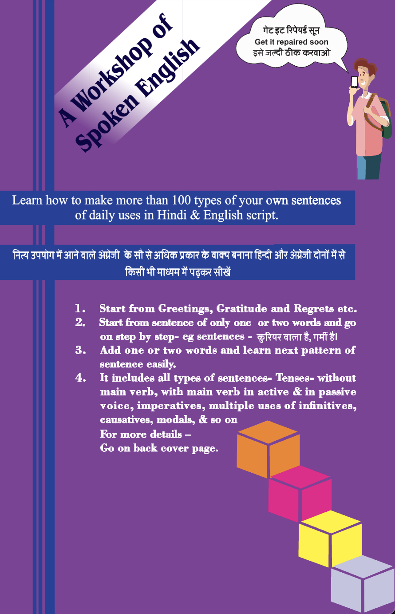
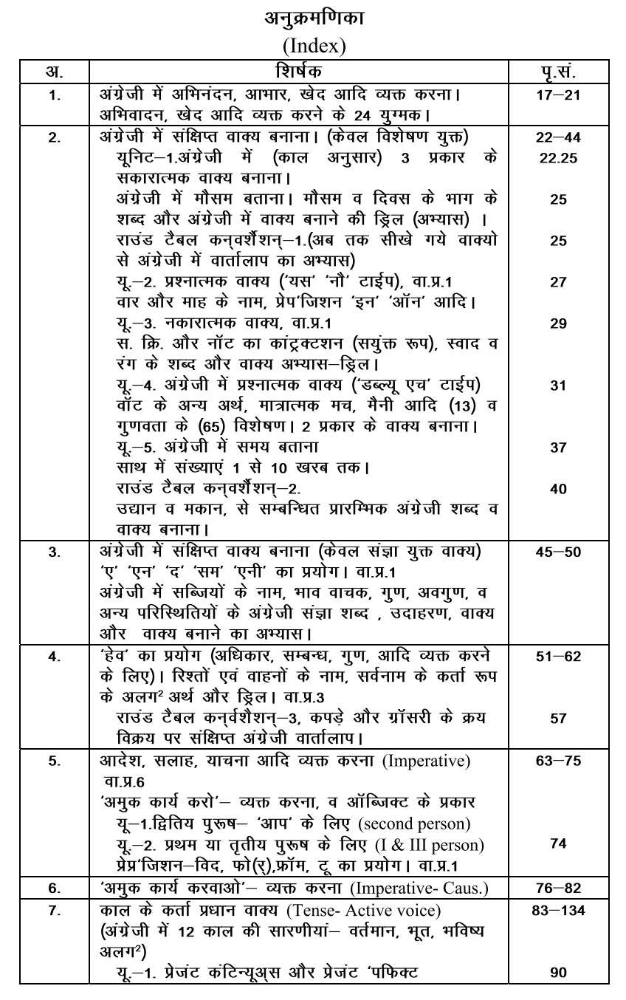
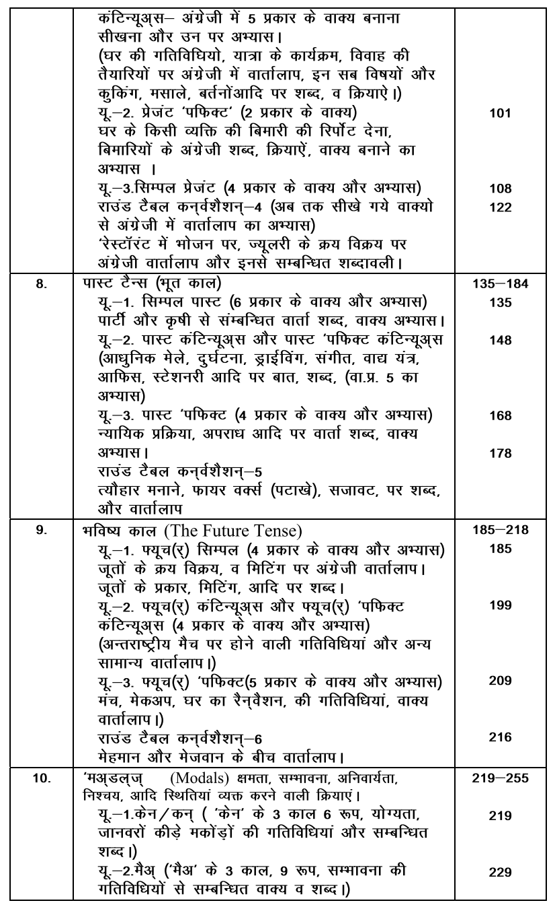
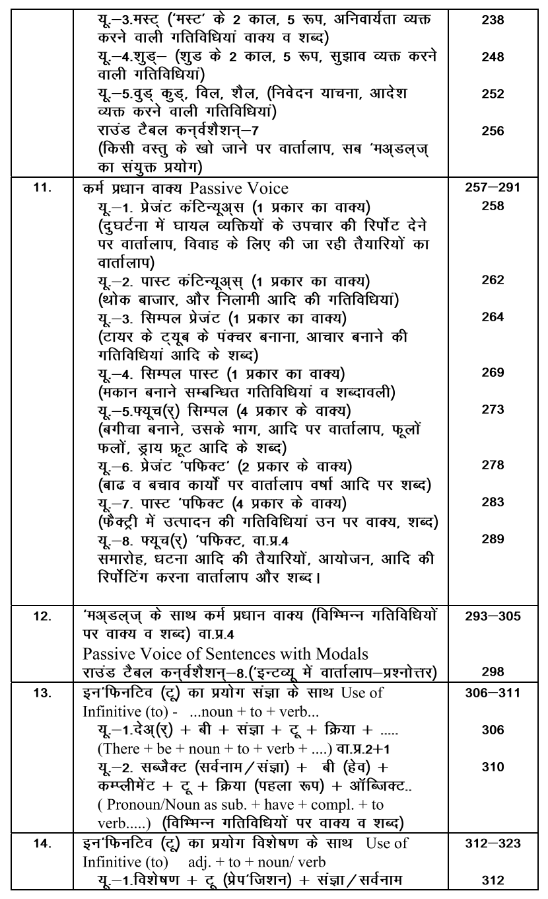
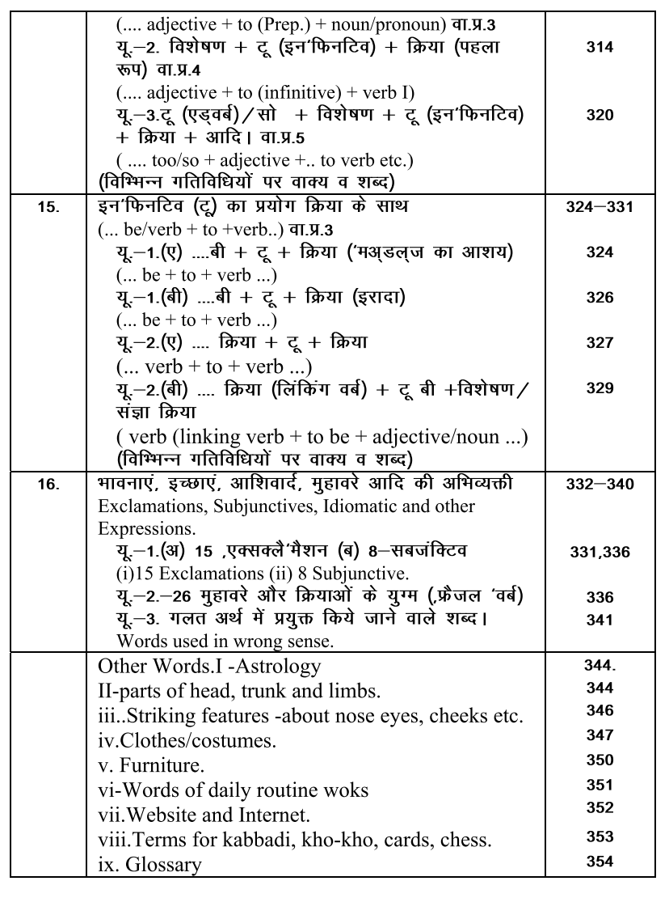

Learn how to speak English in as much time as you can afford.
जितना समय आपके पास है, उतने ही समय में अंग्रेजी बोलना सीखें। वास्तविक आत्मविश्वास के लिए व्यावहारिक तकनीकें।

बिना किसी झिझक के, स्वाभाविक रूप से अंग्रेजी बोलने का एक संपूर्ण और आसान ब्लूप्रिंट।
शुद्ध उच्चारण और सही फोनेटिक स्ट्रक्चर को समझें, ताकि आपकी आवाज़ में स्पष्टता और ग्लोबल अपील आए।
Perfect your accent, understand core phonetic structures, and speak with high clarity.
पुरानी और रटी-रटाई किताबी भाषा छोड़ें। बातचीत, यात्रा और सोशल सेटिंग्स के लिए प्राकृतिक वाक्य सीखें।
Skip rigid textbook phrases. Master natural expressions for everyday conversations.
दैनिक जीवन में काम आने वाले व्यावहारिक शब्दों का भंडार बनाएं, ताकि बिना उलझे आसानी से बोल सकें।
Build a practical vocabulary of words that matter. Speak naturally without overcomplicating sentences.
इंडेक्स पेजों की एक झलक देखकर जानें कि इस कार्यशाला (Workshop) में कौन-कौन से महत्वपूर्ण टॉपिक्स शामिल हैं।

विषय सूची - भाग १ (Index Preview - Part 1)
विषय सूची - भाग २ (Index Preview - Part 2)
विषय सूची - भाग ३ (Index Preview - Part 3)
विषय सूची - भाग ४ (Index Preview - Part 4)चाहे आपके पास दिन में केवल 5 मिनट हों या एक घंटा, यह किताब आपके व्यस्त शेड्यूल के हिसाब से ढल जाती है। जटिल ग्रामर के नियमों में उलझने के बजाय, यह सीधे व्यावहारिक बोलचाल पर ध्यान केंद्रित करती है।
Amazon.in पर देखें →